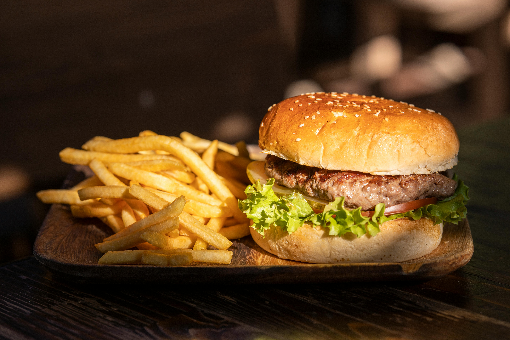
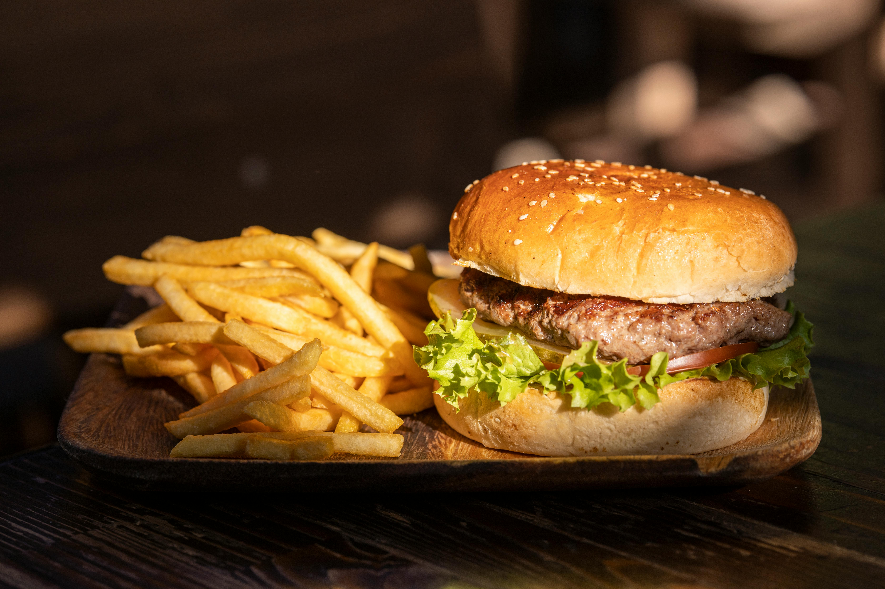

Burger-Guy

"Burgers are the perfect canvas for culinary creativity." - Rachael Ray
"Burgers are the perfect canvas for culinary creativity." - Rachael Ray
Situated at 2660 Teaster Lane, Cookie Dough Monster stands out for offering premium quality food to residents, families, and visitors in Pigeon Forge. We take pride in using only the finest ingredients. Our array of homemade offerings includes soups, marinades, dressings, sauces, and exceptionally tasty edible cookie dough. Renowned for our delightful desserts, we're also celebrated for serving some of the best burgers in East Tennessee. Conveniently located behind The Island and directly opposite The Mountain Mile, our restaurant is a popular destination. It's an ideal spot to savor mouth-watering food and desserts. Our establishment ranks among the top 10 dining experiences in Pigeon Forge, attracting tourists and locals alike. In our vibrant neighborhood, you'll find a variety of outstanding local enterprises, including the Rocky Top Mountain Coaster, Pigeon Forge Snow, Nike Clearance Store, J.Del’s Pizza, Murder Mystery Dinner Show, Cinnaholic, Pottery House Cafe & Grille, Old Mill, Old Mill Shops, and The Island. Make sure to visit us for an unforgettable culinary adventure!
Welcome to The Burger Joint Restaurant! We’ve got everything you’re looking for, from the Classic, to fusion flavors like the Kimchi, to the Veggie, for our vegetarian friends. We’re committed to serving delicious, fresh fare that will make you re-think how burgers should taste. Check out our menu for our variety of hand-crafted burgers and see why people come to us for the Best Burger in Houston. Want The Burger Joint food truck for your next event? We’ll be there! No matter what the occasion, our mouth-watering burgers can help make any event an extra special one. More info on our Catering page. Come have a taste of what many reviews are calling “Houston’s Best Burger”. Here at Burger Joint, we know what goes into our food. From our house mayo and special dipping sauces, to our hand-cut, twice fried french fries, we’re all about quality ingredients. Our patties are no exception. Freshly ground Angus beef.


 
